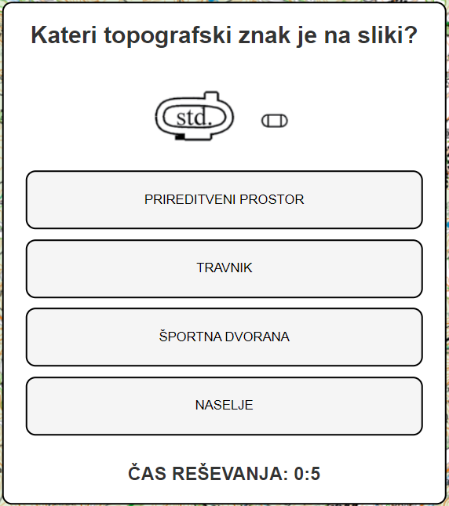
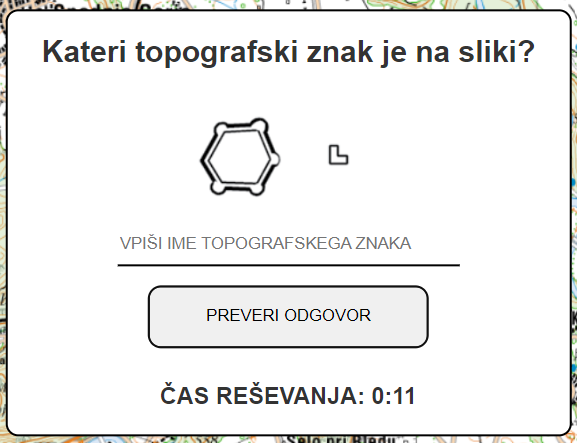

TopoTest
-TOPO KVIZ
cc
IZBERI PRAVILEN ODGOVOR!

Izberi enega izmed danih odgovorv
V čim krajšem času izberite enega izmed 4 možnih odgovorov. Dobite 20 naključno izbranih topografskih znakov.
POIZKUSI>>>
ZAPIŠI PRAVILEN ODGOVOR!

Vpišite ime topografskega znaka
V čim krajšem času vpišite čim več reavilnih odgovorv. Podanih imate 20 naključno izbranih topografskih znakov. Ko vpišete znak kliknite "PREVERI ODGOVOR".
Vseeno je ali uporabljate velike ali male črke!